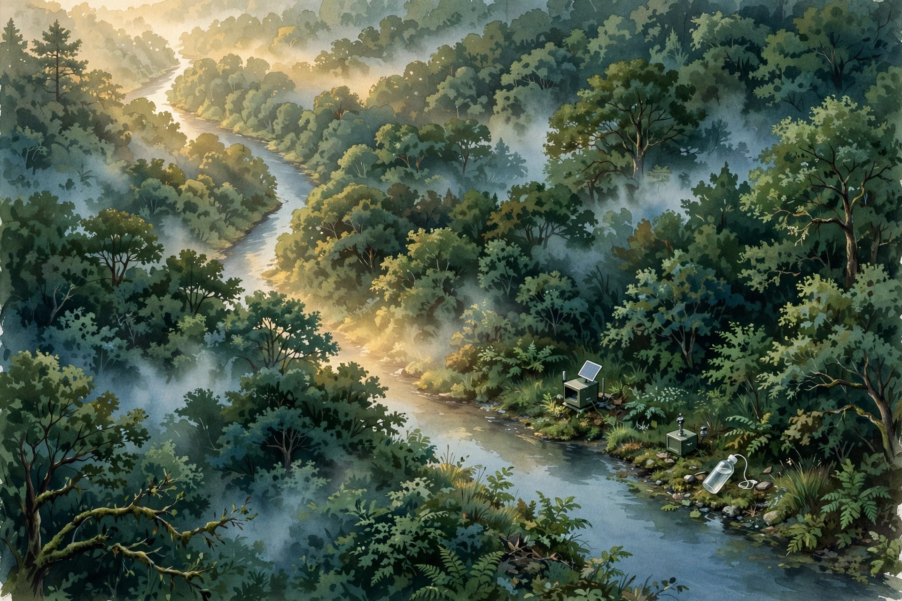
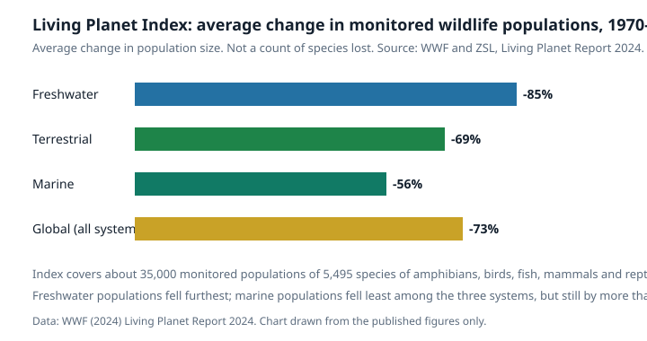
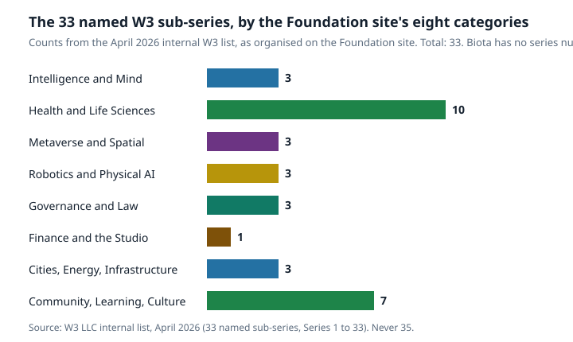

Article 66 · Biota · AGI Future Foundation
Counting Life: How Biodiversity Is Actually Measured
Richness, evenness, eDNA, and the global indices, and what each one can and cannot tell you

Illustration: a forest canopy and river with field sampling equipment. Generated illustration, not a photograph.
The question beneath every conservation claim
Every claim about nature in trouble, or nature recovering, rests on a measurement. Somebody counted something, in some place, over some period, using some rule for what counts, and then compared that count with another count made under rules that were supposed to be the same. If the rules were not the same, the comparison is meaningless. If the place was not representative, the conclusion does not travel. If the method misses the rare, the quiet, and the microscopic, then the picture it gives is a picture of the common, the loud, and the visible, and it should be labelled as such.
That is why this article starts with method rather than with alarm. The numbers that follow are serious. Monitored wildlife populations fell by an average of 73 percent between 1970 and 2020, according to the Living Planet Index published by WWF and the Zoological Society of London. More than 47,000 species are assessed as threatened with extinction on the IUCN Red List. Those numbers are real, and this article will explain exactly what they measure, because the most common error in biodiversity reporting is not inventing a number. It is repeating a true number as if it meant something it does not mean.
Biodiversity is variety at three levels: genes within species, species themselves, and ecosystems. Any single number claiming to capture “biodiversity” is a compression, and every compression throws something away. The honest question is never “what is the biodiversity number?” It is “which aspect of living variety are we measuring, with what tool, at what scale, and for what decision?”
Richness: the simplest count, and its trap
The oldest and simplest measure is species richness: the number of different species found in a given place. It is intuitive, it is easy to explain, and it is the measure most often quoted in headlines. It is also the measure most easily misread, because richness depends on effort. Count for an hour and you will find fewer species than if you count for a day. Count in one season and you will miss the migrants, the hibernators, and the plants that flower for two weeks a year. Count with a net and you will find different species than if you count with a trap, a camera, or a microphone. Two richness numbers from two places, or two years, can only be compared if the effort behind them is comparable, and in practice it very often is not.
Ecologists have a standard way of showing this problem, called the species accumulation curve. As you add samples, one after another, the number of species you have seen rises quickly at first and then flattens, because each new sample mostly repeats species you already know, and only occasionally adds a new one. The curve never quite reaches the true richness of the place, because there are always rare species you have not met yet. The shape of the curve is itself information: a curve still climbing steeply tells you the place is under-sampled, and any richness number quoted from it is a lower bound, not a total. A curve that has flattened tells you the sampling was reasonably complete, and the number is more trustworthy. When you read a richness figure, the first question to ask is therefore not “how many species?” but “how hard did they look, and did the curve flatten?”
A recent study of lake fish in Great Britain shows how practical this question has become. Researchers analysed 2,134 water samples collected between January 2015 and March 2019 from 101 lakes, using environmental DNA, and found that ten water samples collected from the shoreline in winter were usually enough to capture 95 percent of the fish species present in a lake, regardless of how large the lake was. Ninety-three of the 101 lakes reached at least 95 percent coverage with only ten samples. The authors note that their guidance applies to autumn and winter conditions in British lakes and may not transfer to summer surveys or warmer climates, and that rare species were disproportionately likely to be missed in reduced datasets. For programmes targeting endangered natives or early-stage invasive species, where a single detection can trigger management action, the authors recommend at least twenty samples per lake. The right amount of effort depends on what you cannot afford to miss, and the rare is exactly what a small sample misses first.
Richness also treats every species as equal, which is why ecologists supplement it with measures that weight species by abundance, distinctiveness, and role. The rest of this article is about those supplements, and about when each one is the right tool.
Evenness: Shannon, Simpson, and the Hill family
If richness asks “how many kinds are here?”, evenness asks “how is abundance shared among them?” A meadow with 100 individuals split evenly across ten species is a different community from a meadow with 100 individuals of which 91 belong to one species. Both have richness ten. Only the first looks healthy, and only the first is resilient, because in the second meadow the loss of a single dominant species leaves almost nothing behind. Evenness is the measure that catches this difference, and the two classic indices that combine richness and evenness are Shannon and Simpson.
The Shannon index, often written H with a prime, is calculated as the negative sum over species of each species’ proportion multiplied by the natural logarithm of that proportion. In plain language, it rewards both having many species and having them evenly represented, and it is especially sensitive to rare species. The Simpson index is built on the probability that two individuals picked at random belong to the same species, and it is usually reported as one minus that probability, so that higher values mean more diversity. Simpson gives more weight to abundant species and is less moved by the rare. Neither index is “correct”. They answer different questions, and choosing between them is choosing what you care about: Shannon if you care about the rare, Simpson if you care about dominance.
The modern synthesis, set out by Anne Chao and colleagues in a 2021 conceptual guide published in Oikos, is that richness, Shannon, and Simpson are not three unrelated tools but three points on a single spectrum called Hill diversity. Hill numbers express diversity as an “effective number of species”: the number of equally abundant species that would give the same diversity value as the community you actually measured. Richness weights all species equally, Shannon weights them in proportion to their abundance, and Simpson weights abundant species most heavily. All three can now be reported on the same scale, in units of species. Chao and colleagues’ second recommendation is equally important: compare samples at equal coverage, meaning equal completeness of sampling, rather than equal effort. Two samples with the same number of individuals can be at very different levels of completeness if one comes from a species-poor place and the other from a species-rich one. There is no way to eliminate the effect of relative abundance from diversity estimates, including richness itself. A researcher must choose the sensitivity of the metric towards rare and common species, and must say so.
| Measure | What it counts | What it is sensitive to | Best used when |
|---|---|---|---|
| Species richness | Number of different species | Every species equally, rare included | You need a simple census and sampling is thorough |
| Shannon index | Richness plus evenness | Rare species more than Simpson | You care about the full community, including the rare |
| Simpson index | Richness plus evenness | Abundant species, dominance | You care about who dominates and how concentrated abundance is |
| Hill numbers | Effective number of species | Chosen by the researcher, stated openly | You want richness, Shannon, and Simpson on one comparable scale |
| Coverage | Completeness of the sample | How much of the community was actually seen | You are comparing samples fairly across places or years |
Alpha, beta, gamma: diversity at three scales
A single meadow is not the landscape, and the landscape is not the region. Ecologists therefore speak of diversity at three scales, and the distinction matters for every conservation decision. Alpha diversity is the diversity within one local community or habitat. Beta diversity is the difference in diversity between habitats: how much the species list changes as you move from meadow to woodland to wetland. Gamma diversity is the total diversity of a larger region: all the species across all its habitats combined.
Beta diversity is where the 30 by 30 argument, discussed later in this article, gets its teeth. A conservation plan that protects 30 percent of land by area but protects only one habitat type has conserved area without conserving variety. A plan that protects 30 percent spread across the full range of habitats, including the unglamorous ones, conserves the turnover between places, which is where much of the world’s species actually live. The same logic applies inside Biota as a teaching world. Its six zones are not six copies of one room. They are six different rooms with different jobs, and a visitor who sees only one of them has not seen the world. Variety lives between places as much as within them.
eDNA: reading life from the water it leaves behind
The most consequential new measurement tool of the last decade does not look at animals at all. Environmental DNA, or eDNA, reads the genetic material organisms shed into their surroundings: skin cells, mucus, faeces, spores, pollen. A litre or two of water, a scoop of soil, or air drawn through a filter can hold enough DNA to identify the species that were recently present, without anyone seeing, handling, or harming them. The sample is filtered, the DNA is extracted and amplified, usually by targeting a short marker region such as the 12S ribosomal RNA gene for fish, and the resulting sequences are matched against reference databases.
The evidence for its sensitivity is now strong. In the Great Britain lake study, eDNA from shoreline water recorded 40 fish taxa across 101 lakes, with ten samples usually enough for 95 percent coverage. In Maizuru Bay in Japan, water samples collected within just six hours yielded 128 fish species. A long-read shotgun sequencing study of the Avoca River in Ireland detected otters and oysters, foxes and fish, badgers and bacteria, and also leatherback turtles and octopuses, along with a fungus that causes catastrophic declines in frog populations worldwide. One cup of water, in that study, carried information about wildlife, pollution, and pathogens at the same time.
But eDNA has limits. DNA in water does not come with a timestamp: it can persist for days or weeks and travel downstream, so a detection means a species was present recently and somewhere upstream, not that it is in front of you now. DNA cannot usually tell you how many individuals there were, or their age, sex, or health. A positive result for an invasive species can trigger costly management action, so false positives from contamination and false negatives from degraded DNA or incomplete reference databases both matter. And eDNA is only as good as the reference library it is matched against: a species whose DNA has never been sequenced cannot be identified from its DNA. The method is therefore best used as a complement to traditional surveys, not a replacement. It finds what the eye misses, and the eye confirms what the DNA suggests.
Listening, watching, and looking down from above
Not all life can be counted by catching it or by reading its DNA. Some of it is best counted by listening. Acoustic monitoring records the sounds animals make and uses them as a census: bird song at dawn, frog choruses after rain, fish choruses on a reef, whale calls across an ocean basin. A single autonomous recorder can listen for months, in weather that would stop a field team, and the recordings can be searched afterwards by software trained to recognise species. The method’s strength is coverage over time. Its weakness is that silence is ambiguous: an animal that is present but quiet is invisible to a microphone, and a recording full of one loud species can hide the quiet ones. The WAVE agent and the bioacoustics work in the Foundation’s orbit use exactly this approach for birds and other vocal animals, and the WAVE series of articles in this programme covers reef and forest soundscapes in detail. This article treats acoustics as one instrument in the orchestra, not the whole performance.
Camera traps do the equivalent work for animals that move but do not sing, recording presence day or night without a human present. Their limits are placement and bias: a camera on a trail photographs trail users, and a species that avoids trails is under-counted. Remote sensing works at the other end of the scale: satellites track forest cover, wetland extent, and chlorophyll in the ocean, giving wall-to-wall coverage no field team can match. What satellites cannot do is count species. They measure habitat, and habitat is a proxy for life, not life itself. A forest that looks intact from orbit can be empty inside, a phenomenon ecologists call an empty forest, where hunting has removed the animals while the trees still stand. Every method in this section therefore needs the others. The count, the sound, the photograph, and the satellite image each catch a different part of the truth.
The big indices: what the world is actually reporting
Two global reporting systems dominate public discussion of biodiversity loss, and they measure different things. Confusing them is the single most common error in reporting on the subject.
The Living Planet Index, managed by the Zoological Society of London in cooperation with WWF, tracks trends in vertebrate populations. Its 2024 edition, published in the Living Planet Report 2024, reports that the average size of monitored wildlife populations fell by 73 percent between 1970 and 2020, based on about 35,000 population trends covering 5,495 species of amphibians, birds, fish, mammals, and reptiles. By system, freshwater populations fell by 85 percent, terrestrial populations by 69 percent, and marine populations by 56 percent. The index is an average of population-size trends. It is not a count of animals lost, and it is not a measure of species going extinct. It is also limited to vertebrates, largely because long-term population data for invertebrates and plants are less widely available, and it carries taxonomic, geographic, and temporal gaps and biases that its own documentation acknowledges. A 2024 study from Charles University argued that the index’s calculation method overstates vertebrate population declines, a critique worth knowing. The signal is serious either way. The exact size of the decline is debated, and honest reporting says so.

Chart: average change in monitored wildlife population size, 1970 to 2020, by system. Source: WWF and ZSL, Living Planet Report 2024. The index tracks population trends, not species extinctions.
The IUCN Red List of Threatened Species measures something else entirely: the extinction risk of individual species, assessed one by one against quantitative criteria. Its April 2025 update, version 2025-1, includes 169,420 species, of which 47,187 are threatened with extinction, meaning assessed as Critically Endangered, Endangered, or Vulnerable. The breakdown by group shows how uneven both knowledge and risk are. Of the groups that are almost completely assessed, amphibians are the most threatened: 2,873 of 8,009 assessed amphibian species, or 36 percent, are threatened. Mammals follow at 1,363 of 6,025 assessed, or 23 percent. Reptiles stand at 1,846 of 10,316, or 18 percent, and birds at 1,311 of 11,195, or 12 percent. Fishes, at 4,046 threatened of 28,866 assessed, are less completely covered, and insects are barely assessed at all: only 13,442 of an estimated 1,003,612 described insect species have been evaluated, about 1.3 percent. The Red List is a map with large blank areas, and the blank areas are unmeasured areas, not safe ones.
| Group | Species assessed (2025-1) | Threatened | Share threatened |
|---|---|---|---|
| Amphibians | 8,009 | 2,873 | 36 percent |
| Mammals | 6,025 | 1,363 | 23 percent |
| Reptiles | 10,316 | 1,846 | 18 percent |
| Birds | 11,195 | 1,311 | 12 percent |
| Fishes | 28,866 | 4,046 | Not given: coverage below 80 percent |
| Insects | 13,442 of about 1,003,612 described | 2,565 | Not given: coverage about 1.3 percent |
| All species | 169,420 | 47,187 | About 28 percent of those assessed |
The two indices answer different questions. The Living Planet Index answers “are populations, on average, getting bigger or smaller?” The Red List answers “how many species are at risk of disappearing entirely, and which ones?” In practice both are moving in the wrong direction, and that is the news. But the news is only useful if the two measures are not collapsed into one vague claim that “biodiversity has fallen by 73 percent”. It has not. Monitored vertebrate populations have fallen by 73 percent on average, and 47,187 assessed species are threatened. Those are two different facts, and they are both worth stating precisely.
The 30 by 30 framework, and what it asks measurement to do
In December 2022, parties to the Convention on Biological Diversity adopted the Kunming-Montreal Global Biodiversity Framework at COP15 in Montreal. The framework sets four global goals for 2050 and 23 targets for 2030, and two of those targets have become the organising numbers of global conservation. Target 2 requires that at least 30 percent of areas of degraded terrestrial, inland water, and coastal and marine ecosystems be under effective restoration by 2030. Target 3, known as 30 by 30, requires that at least 30 percent of terrestrial, inland water, and coastal and marine areas be effectively conserved and managed by 2030.
The word “effectively” is doing the heavy lifting in both targets, and it is where measurement returns to centre stage. A protected area on paper, with no staff, no enforcement, and no monitoring, is not effective conservation. It is a line on a map. The framework’s own language requires ecologically representative and well-connected systems of protected areas, effectively and equitably managed, with respect for the rights of Indigenous Peoples and local communities. That means the 30 percent must be measured not only in hectares but in habitat coverage, connectivity, management quality, and outcomes for the species that live there. The tools in this article are the tools that will tell the world whether 30 by 30 is real or paper.
Biota: a world built around measurement, not a measurement itself
This is where Biota enters the story, and the distinction must be kept sharp. Biota is a world in the Foundation’s worlds-3d set, a forest-biome interpretation anchored in the open South Atlantic at -38.713, -27.248. Its fabric, the underlying world definition, holds 36 nodes, organised into six zones: the Personalized Therapy Lab, the DAO Governance Hall, the Multi-Blockchain Ledger, the Healthcare Data Exchange, the Biopharma AGI Agents Hub, and the Steward Council. Nine game characters populate it: six agents and three advisors. There are seven quests, twelve collectibles, and two training simulations, one for running a governance vote and one for tracing a ledger entry. The world also carries two agent companions as game characters, ALS Researcher and CMMC, representing the real Virtuals ACP agents of the same names. Their live instances are offline, and the world file says so plainly.
None of that is science. It is a teaching world, and its value is as a place where the ideas in this article can be walked through rather than read about. The Therapy Lab is a training lab, not a treatment room: its station text says so explicitly. The Healthcare Data Exchange teaches a rule, that data moves only with permission and every move is recorded, using fictional training data. The Governance Hall teaches a procedure, that a vote is read, discussed, cast, and recorded, in that order. The Steward Council seats are held by humans in the world’s own design, and the liaison character who carries messages to the council says so directly: “I carry the words; I never cast the vote.” These are governance ideas made walkable, and they are honest as long as nobody claims the walk is the work. A simulation of a vote moves no funds, changes no real organisation, and binds nobody, and the world’s own simulation notes say exactly that.
Biota’s place in the wider programme is also worth stating plainly. The Foundation site organises the 33 named W3 sub-series into eight categories, and the chart below shows the counts: Health and Life Sciences holds ten, Community, Learning, and Culture holds seven, and Intelligence and Mind, Metaverse and Spatial, Robotics and Physical AI, Governance and Law, and Cities, Energy, and Infrastructure hold three each, with Finance and the Studio holding one. Biota is not in that chart, because Biota is not one of the 33. It is the living-systems world, anchored by its fabric rather than by a series slot, and it sits alongside the series rather than inside them. That is a description, not a demotion, and it matters because the series list is a legal and organisational structure with consequences for funding and governance, while Biota is a world with consequences for learning.

Chart: the 33 named W3 sub-series in the April 2026 internal list, by the Foundation site’s eight categories. Total 33. Biota has no series number and is not counted here. Source: W3 LLC internal list, April 2026.
How to read a biodiversity number: a short checklist
The reader who finishes this article should be able to interrogate any biodiversity claim in under a minute. The checklist below is the article in miniature.
- What is being counted? Species, populations, individuals, genes, or habitat area? A claim that slides between them is not a claim.
- At what scale? One site, one habitat, one region, or the world? Alpha, beta, and gamma answer different questions.
- With what effort, and how complete was the sample? Ask about coverage, not just hours in the field. A richness number without a coverage statement is a lower bound wearing a total’s clothes.
- Which metric, and why that one? Richness, Shannon, Simpson, or a Hill number? Each weights rare and common species differently, and the choice should be stated.
- What is the comparison? A number on its own is trivia. A number compared with a baseline, measured the same way, is evidence.
- What is missing? Which groups were not assessed, which places were not visited, which seasons were not sampled? The Red List’s unassessed insects and the Living Planet Index’s missing invertebrates are the limits of the map.
- Who measured it, and can the measurement be repeated? A method that cannot be repeated by another team is an anecdote, not a monitoring programme.
Biodiversity measurement is not a solved problem. It is a discipline with good tools, honest limits, and a growing ability to listen to life without disturbing it. The question the tools raise is not technical. It is whether the people who make decisions about land, sea, and money will use the measurements that exist, fund the measurements that do not yet exist, and accept what the measurements say even when the answer is unwelcome. Biota, as a world, can teach a visitor to ask those questions. It cannot answer them. That work belongs to the field teams, the laboratories, the Indigenous stewards, and the institutions whose data this article has drawn on, and to the readers who learn to tell a good number from a good story.
Glossary
- Coverage: The completeness of a sample: how much of the community was actually detected.
- Effective number of species: The number of equally abundant species that would give the same diversity value as the community measured. The common scale for Hill numbers.
- eDNA (environmental DNA): Genetic material shed by organisms into water, soil, or air, used to detect species without seeing or handling them.
- Evenness: How evenly abundance is shared among the species in a community.
- Hill diversity: A family of diversity measures that includes richness, Shannon, and Simpson as special cases, all expressed as effective numbers of species.
- Living Planet Index: An index of trends in vertebrate population sizes, managed by ZSL with WWF.
- Red List: The IUCN Red List of Threatened Species, assessing extinction risk species by species.
- Species richness: The number of different species found in a given place.
Frequently asked questions
Does the 73 percent Living Planet Index figure mean we have lost 73 percent of all animals? No. It means the average size of monitored vertebrate populations fell by 73 percent between 1970 and 2020, across about 35,000 populations of 5,495 species. It is not a count of individuals lost, and it is not a count of species extinct.
How many species are threatened with extinction? On the IUCN Red List version 2025-1, 47,187 of 169,420 assessed species are threatened, about 28 percent of those assessed. Most species on Earth have never been assessed, so the true number of threatened species is certainly higher, and how much higher is unknown.
Can eDNA replace field surveys? No. eDNA detects presence well, including rare and cryptic species, but it cannot usually tell you abundance, age, sex, or health, and its signal can travel and persist after the animal has left. It is best used alongside traditional surveys, not instead of them.
What is 30 by 30? Target 3 of the Kunming-Montreal Global Biodiversity Framework, adopted in December 2022: conserve at least 30 percent of land, inland waters, and coastal and marine areas by 2030, effectively and equitably managed. A companion target, Target 2, requires 30 percent of degraded ecosystems to be under restoration by the same year.
Is Biota a real scientific monitoring programme? No. Biota is a proposed 3D world in the Foundation’s worlds-3d set, anchored at -38.713, -27.248, and not live on RP1. It teaches ideas from biodiversity science and governance. It does not collect scientific data, and its characters are game characters, not researchers.
Goals served: Foundation donations and funding (foundation-funding); corporate paperwork readiness (corporate-safe); BuilderSpace tour learning content (builderspace-tour).
Sources
- Chao, A., et al. “A conceptual guide to measuring species diversity.” Oikos 130: 321-338, 2021. doi: 10.1111/oik.07202. https://www.researchgate.net/publication/349212341_A_conceptual_guide_to_measuring_species_diversity
- WWF and ZSL. Living Planet Report 2024: A System in Peril. 2024. https://www.wwf.org.uk/sites/default/files/2024-10/living-planet-report-2024.pdf
- Living Planet Index. https://en.wikipedia.org/wiki/Living_Planet_Index
- IUCN. “IUCN Red List Update: Global Impacts, Regional Statuses, and the Way Forward.” 9 April 2025. https://iucn.org/news/202504/iucn-red-list-update-global-impacts-regional-statuses-and-way-forward
- IUCN Red List version 2025-1, Table 1a. https://nc.iucnredlist.org/redlist/content/attachment_files/2025-1_RL_Table_1a.pdf
- Australian Government, Department of Climate Change, Energy, the Environment and Water. “Kunming-Montreal Global Biodiversity Framework.” https://www.dcceew.gov.au/environment/biodiversity/international/un-convention-biological-diversity/global-biodiversity-framework
- “Ten Water Samples Enough to Track Lake Fish, eDNA Study Finds.” ScienMag. https://scienmag.com/ten-water-samples-enough-to-track-lake-fish-edna-study-finds/
- “Fishing for DNA: How a cup of river water can reveal secrets about human health, pollution and biodiversity.” Phys.org, 2026. https://phys.org/news/2026-07-fishing-dna-cup-river-reveal.html
- “eDNA Sampling For Species Identification: 7 Examples.” Cmbio Insights. https://insights.cmbio.io/edna-sampling-for-species-identification-7-examples
- Foundation site, BioDAO article (article-11, local file).
- Biota world data: worlds-3d data/fabrics/biota.json and worlds/biota-blockchain.json (local files).
- W3 LLC internal list, April 2026 (33 named sub-series, Series 1 to 33). Local file.